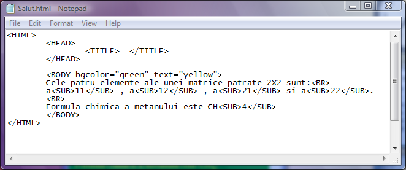
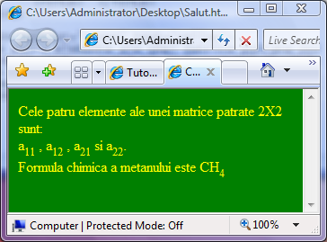

Scriere ca indice
In matematica si in chimie se utilizeaza extrem de des indicii inferiori. Pentru
a putea scrie o formula chimica, termenii unui sir sau elementele unei matrici tot ceea ce
dorim sa fie afisat ca indice inferior trebuie plasat intre eticheterle SUB si respectiv /SUB.
Iata in continuare un exemplu de utilizare a scrierii ca indice:


Inapoi la Formatare fonturi